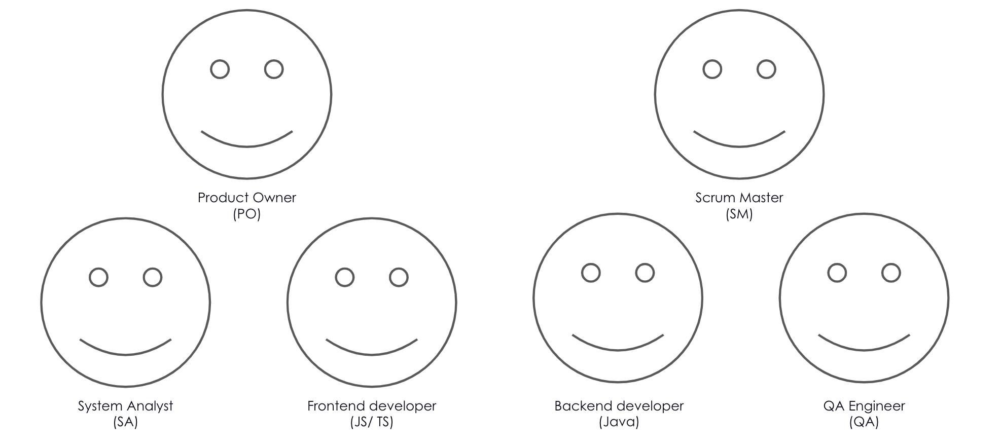
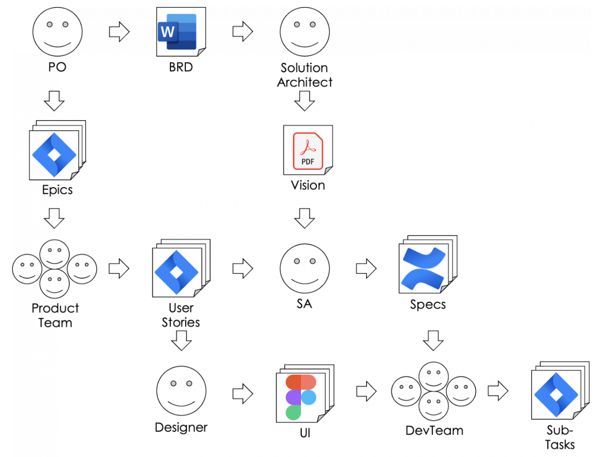
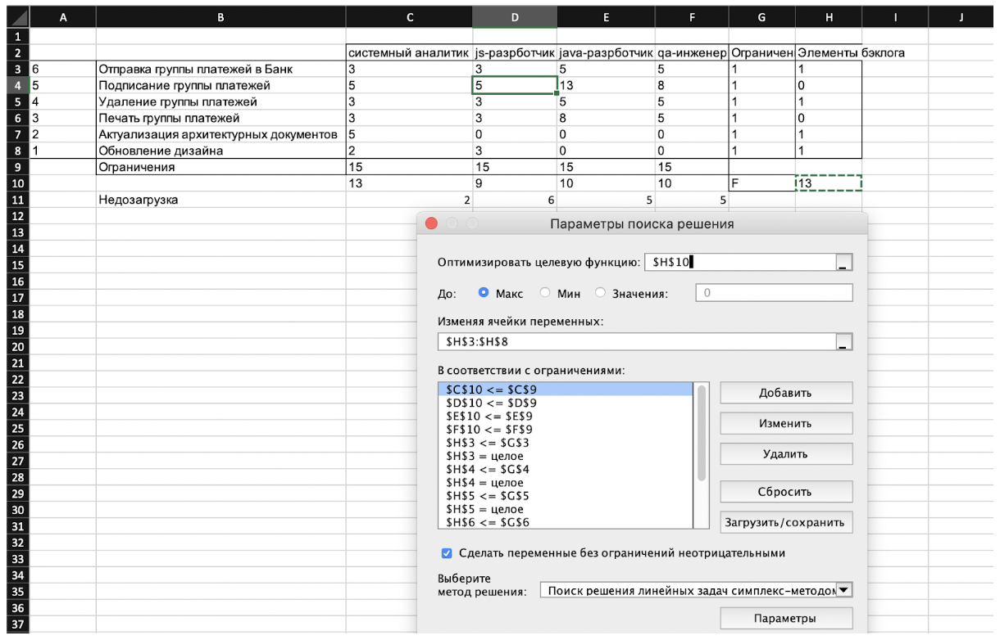

Ёмкости команды: 20 sp в спринт
Но её члены часто имеют ключевую компетенцию
Если его реализация требует нескольких членов команды
Процесс формализации требований
|  |
Элементы бэклога продукта:
|
Приоритезация элементов бэклога
| Актуализация архитектурных документов | Подписание группы платежей | Удаление группы платежей | Удаление группы платежей | Отправка группы платежей в Банк | Обновление дизайна | |
| Актуализация архитектурных документов | ^ | ^ | ^ | ^ | < | |
| Подписание группы платежей | < | < | ^ | < | ||
| Удаление группы платежей | < | ^ | < | |||
| Печать группы платежей | ^ | < | ||||
| Отправка группы платежей в Банк | < | |||||
| Обновление дизайна |
| Элемент бэклога | Ценность | Оценка SA, sp | Оценка JS/ TS, sp | Оценка Java, sp | Оценка QA, sp |
|---|---|---|---|---|---|
| Отправка группы платежей в Банк (us1) | 6 | 3 | 3 | 5 | 5 |
| Подписание группы платежей (us2) | 5 | 5 | 5 | 13 | 8 |
| Удаление группы платежей (us3) | 4 | 3 | 3 | 5 | 5 |
| Печать группы платежей (us4) | 3 | 3 | 3 | 8 | 5 |
| Актуализация архитектурных документов (us5) | 2 | 5 | 0 | 0 | 0 |
| Обновление дизайна (us6) | 1 | 2 | 3 | 0 | 0 |
Ёмкости каждого члена Scrum-команды: 15 sp в спринт
Допущение: Чем выше элемент в бэклоге продукта, тем выше его ценность
В терминах задачи линейного программирования
| F = 6us1 + 5us2 + 4us3 +3us4 +2us5 + us6 → max | Функция ценности |
|
3us1 + 5us2 + 3us3 +3us4 + 5us5 + 2us6 ≤ 15 3us1 + 5us2 + 3us3 +3us4 + 3us6 ≤ 15 5us1 + 13us2 + 5us3 +8us4 ≤ 15 5us1 + 8us2 + 5us3 + 5us4 ≤ 15 |
Распределение загрузки членов команды (SA, JS/ TS, Java, QA) |
| usi ≥ 0, usi ≤ 1, usi - целое, i = 1, …, 6 | Элемент бэклога продукта либо будет взят в спринт (1) либо нет (0) |
Примечние: Случай независимых элементов бэклога продукта
В терминах задачи линейного программирования
| F = 6us1 + 5us2 + 4us3 +3us4 +2us5 + us6 → max | Функция ценности |
|
3us1 + 5us2 + 3us3 +3us4 + 5us5 + 2us6 ≤ 15 3us1 + 5us2 + 3us3 +3us4 + 3us6 ≤ 15 5us1 + 13us2 + 5us3 +8us4 ≤ 15 5us1 + 8us2 + 5us3 + 5us4 ≤ 15 |
Распределение загрузки членов команды (SA, JS/ TS, Java, QA) |
| usi ≥ 0, usi ≤ 1, usi - целое, i = 1, …, 6 | Элемент бэклога продукта либо будет взят в спринт (1) либо нет (0) |
| us5 ≥ usj, j = 1, …, 4 | Архитектурные документы должны быть актуализированы до реализации функционала |
Примечние: Случай зависимых элементов бэклога продукта
Решение задачи
|
F = 13 (1;0;1;0;1;1) |
 |